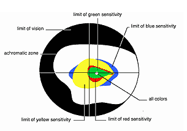
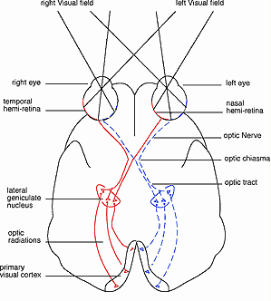

|
>the
science
deflective
video science
We designed the "exoptic
fields" video based on aspects of visual optics, neurophysiology, and
visual psychology. Optics and neurophysiology involve the brightness,
colors, orientation, and the motion of visual stimuli capture the attention
of the viewer. Visual perception also involves the active participation
of the perceiver, her active exploration of the environment, her psychology.
This last fact makes addressing visual psychology the key to successful
visual deflection.
The
following are some of the principles of human vision that we employed
to make the "exoptic fields" video viewers' deflect attention from the
screen.
summary:
Vision is the primary
sensory function in primates and humans. Our visual perception of the
world depends on complex patterns of stimulation. There are three main
areas of scientific research dedicated to understanding vision:
First, visual optics, the mechanics of how the eye receives light
and the nature of visual stimuli.
Second, visual neurophysiology, or how the brain interprets visual
inputs to construct a unified visual image.
And finally, visual attention, an area of psychology that describes
both the properties of the image and the expectations and goals of the
observer that determine the attention given to a perceptual episode.
1-
colors choice in "exoptic fields"
The eye and its
lens catch and focus light onto the receptor cells of the back of the
eye, the retina. The perception of colors starts at the very center of
the retina, in the fovea. The different frequencies and intensities of
light captured at a particular point of the retina are transformed into
neuronal signals by the photoreceptors. They are of two types, the cones
and the rods, but only the cones mediate diurnal and high acuity color
vision. The cones alone occupy the center of the retina. The cones and
rods are made up of different photopigments. These are red, green or blue,
according to the light frequency they can capture. Their repartition in
the retina is well-described. The red and green cones are localized in
the center, with around the less numerous blue cones organized into a
ring (see diagram I).
These
findings imply that the light frequency that reflects the object observed
will influence the way we need to focus on this object. Thus, the "exoptic
fields" video has adapted its color scheme, blue and yellowish tones,
to target the most peripheral photoreceptors.
2-
lines and motions in "exoptic fields"
Once the light pattern strikes the retina, visual signals pass through
the axons of the retinal ganglion cells that form the optic nerve, to
neurons that project directly into the cortical visual areas. At that
point the visual inputs are separated into different components that are
analyzed locally in specialized regions of the cortex. The identification
of an object as well as its spatial position will derive from this analysis
(Zeki, 2000).
visual
system most sensitive
The visual system is most sensitive to well contrasted colors, sharply
defined contours and oriented edges (Wade, 1991). To lure the eyes away
from the center of interest, we based our approach on opposite characteristics,
i.e. smooth contours, blurred lines, undefined shapes forming an horizontal
undulating surface that move toward the edges of the screen.
|

|
diagram
1) Color regions of the right eye.
Color sensitivity can be determined by means of an instrument called
a perimeter, which can present colored spots of light to peripheral
regions of the retina. All colors can be detected in the central
area of the retina.from
"An Introduction: Visual Perception" by Nicholas J. Wade
|

| diagram
2) Pathways from the eyes to the visual cortext, viewed from below. |
continued
from left column...
Advertisers
have extensively used the fact that fast and sudden motions of the object(s)
of interest converging to the center of the TV capture the movements of
our eyes and our undivided attention (Hillstrom and Yantis, 1994; Egeth
and Yantis, 1997; Corbetta and Shulman, 1998). The "exoptic fields"
video has therefore refined all movement to create very slowly undulating
contours and colors that withdraw to the edges of the screen.
3-
psychology of figurative element, the brick wall, in "exoptic fields"
The overall picture is finally created by combining the operations of
the different specialized regions into a unified visual image. If how
the brain does this is
still not understood, the processes of consciousness and memory are thought
to play an essential role (Hoffman, 2000).
The
brick wall in the "exoptic field" acts to neutralize one’s
visual psychology, ones reflections on: "What will happen next."
Meanings commonly associated with a brick wall will ideally lead quickly
to dis-interest on the part of the observer across many human cultures.
bibliography
Corbetta, M., and Shulman, G. L.., Human cortical mechanism
of visual attention during orienting and search, Phil. Trans. R. Soc.
Lond. B, 1998, 353:1353-1362.
Egeth,
H. E., and Yantis S., Visual attention: Control, representation, and time
course, Ann. Rev. Psychol., 1997, 48:269-97.
Hilltrom
A. P., and Yantis S., Visual perception and attentionnal capture, Percept.
Psychophys., 1994, 55(4):399-411.
Hoffman,
D. D., Visual intelligence: How we create what we see. Norton, 2000.
Wade,
N., An introduction: visual Perception, Michael Swanston, N.Y. & London,
Routledge, 1991.
Zeki,
S., An exploration of art and the brain, Oxford University Press, 2000.
|